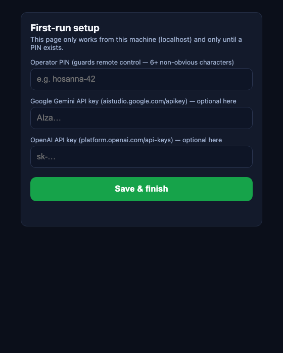
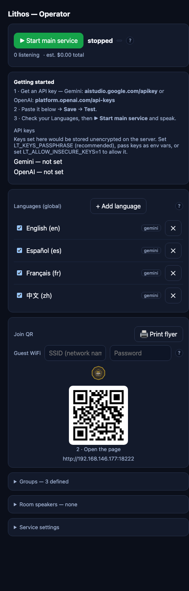
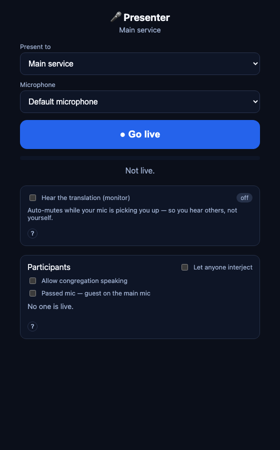
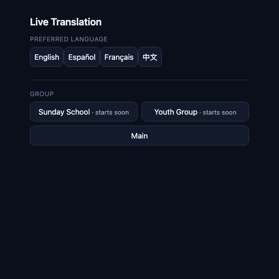

Getting started
Everything here runs on your hardware and your WiFi. Start at the top — the first section is a complete Sunday, and every section after it is optional. You can stop at any rung of the ladder.
Your first Sunday
One laptop at the sound desk. The congregation uses their own phones. Total setup time is about ten minutes, most of it printing the flyer.
- Download and open the app. The first public release is almost ready — until then, this section describes what it will look like. macOS and Windows installers are signed, so there's nothing to click through.
- Pick an operator PIN on the first-run screen. This one PIN guards
the staff pages — operator, presenter, playout — so make it 6+ characters
that aren't a year or
1234(the app refuses weak ones). - Paste an API key — translation is done by an AI provider using
your own account. Google Gemini
(
aistudio.google.com/apikey) is the recommended one — it covers 70+ languages. Paste it on the Operator tab → Save → Test; the test opens a real session so you know it works before Sunday. - Check your languages. English, Spanish, French, and Chinese are on by default; add or remove from the same tab. Each enabled language is one live translation stream, billed per minute by your provider while the service runs — the cost meter on the Operator tab shows the running estimate.
- Print the flyer. The Join QR card holds your guest WiFi name and password (they become a join-the-WiFi QR on the flyer) and a 🖨 Print flyer button. People scan step 1 to hop on the WiFi and step 2 to open the page — nothing to install.
- Go live. Switch to the Presenter tab, pick the microphone, tap ● Go live, and speak. Phones show live captions immediately; a tap adds audio for earbuds. If you have a projector, the This computer tab opens a full-screen caption wall on it.



You could stop here. One speaker, every language, phones and a projector — that's a whole Sunday.
A box that's always on
Instead of someone's laptop, run Lithos headless on a mini-PC, a spare machine in a closet, or a Raspberry Pi — everyone (including the speaker) connects from a browser. It's the same product with no screen attached.
With Docker installed, it's a two-line file and one command:
# .env — an API key and the staff PIN is all it takes
GEMINI_API_KEY=your-key-here
LT_OPERATOR_PIN=hosanna-42./run.sh # finds your LAN address and starts the serverThe log prints two links: http://<your-ip>:8080
for the congregation, and https://<your-ip>:8443 for staff
pages (the operator console and the presenter's mic need a secure page —
staff tap through a one-time certificate notice; the congregation never
sees one).
No Docker? Bare Node works too
On a fresh Ubuntu box (verified on Ubuntu 24.04), install Node 22, then install and run from the project folder:
# Node 22 via NodeSource — curl + ca-certificates are the only prerequisites
sudo apt-get update
sudo apt-get install -y curl ca-certificates
curl -fsSL https://deb.nodesource.com/setup_22.x | sudo bash -
sudo apt-get install -y nodejs# Skips the ~100 MB desktop binary the server never uses — kind to a Pi
ELECTRON_SKIP_BINARY_DOWNLOAD=1 npm install
GEMINI_API_KEY=your-key-here LT_OPERATOR_PIN=hosanna-42 npm run serverThings worth knowing
- Everything you set from the operator page persists —
languages, groups, room speakers, WiFi for the flyer — in a Docker volume
that survives updates and restarts. (Avoid
docker compose down -v; the-vdeletes that volume.) - The speaker presents from a phone: open
/presenteron the staff link, PIN in, tap Go live. A wired headset mic beats holding the phone. - The projector is just a browser: open
/projectoron any TV or PC and full-screen it. - Prefer a file to a web form? Drop a
config.jsonnext to the compose file for languages and groups; operator-page edits still win.
You could stop here. A box in a closet, phones in the pews, nobody owns a laptop cable anymore.
Every room in the building
Classes & breakout groups
Each class gets its own translation room: its own languages, its own speaker, its own audience. On the operator page, Groups → + Add group (e.g. Sunday School, Youth Group). The teacher opens the presenter page, picks their class in Present to, and taps Go live — that starts the class; nothing bills until then.
People can join a class before it starts — the picker marks it “starts soon,” their phone waits quietly, and the moment the teacher goes live everyone connects at once. The teacher even sees how many phones are waiting.

Room speakers & output boxes
- A speaker in a room: the operator page's Room speakers card routes one language per room to the app computer's own output — or to a named playout box.
- A playout box is a Raspberry Pi (or a second laptop
in Playout mode) that plays one room's language out of its audio jack —
into a powered speaker, a mixer, or an FM transmitter. Boxes register
themselves and are assigned a room + language from the
/playoutpage. - A room mic works the same way in reverse: a box (or second laptop) can contribute a microphone that the presenter page lists and controls — it streams only while the presenter is live.
The congregation speaks back
Any phone can request the mic and be translated for everyone — one voice at a time. The presenter's Participants panel is the switchboard: turn on Allow congregation speaking, then grant requests by hand, or flip Let anyone interject for a hands-free discussion. Exactly one voice ever feeds translation, so a teacher on a mic and participants on phones never garble each other. Attendees can also spin up their own temporary PIN-protected group for a hallway conversation — it disappears when they're done.
This is the whole vision: the main hall, every classroom, and the hallway in between — each hearing in its own language.
When something's wrong
Phones can't open the page
LT_PUBLIC_HOST to the
host machine's LAN address so the printed URL and QR point somewhere
phones can reach (./run.sh does this automatically).The staff page shows a certificate warning
It refused my PIN
1234, a year, a short word) are rejected. Pick 6+ characters
that aren't guessable — a short phrase like hosanna-42 works
well and types easily on a phone.What does it actually cost?
Where do my settings live? Are recordings kept?
Still stuck? Write to support@lithos.community — include what you saw on screen and whether you're on the desktop app or the server. A photo of the error beats a description of it.